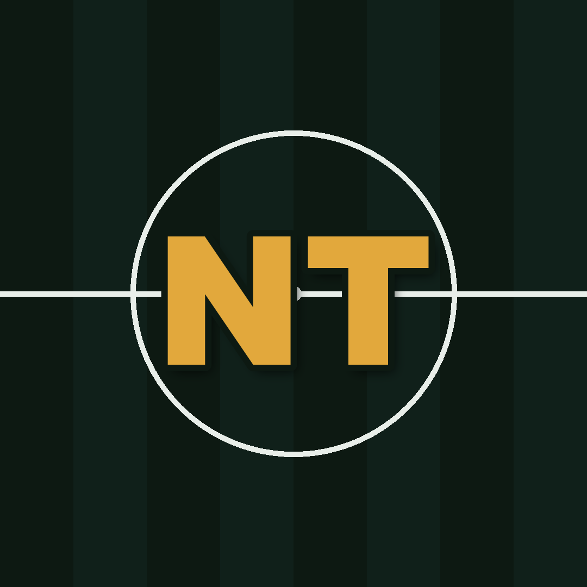

Condiciones de uso
Última actualización: 6 de noviembre de 2026.
Uso privado
La herramienta NicheTok es de uso exclusivo del titular de las cuentas de NicheTok en TikTok y YouTube. No se ofrece a terceros, no admite registros y no presta ningún servicio al público.
Contenido
Los vídeos que se publican son responsabilidad de su autor, que se compromete a cumplir las normas de la comunidad y las condiciones de TikTok y YouTube, incluidas las de derechos de autor y de contenido generado con IA.
Sin garantías
La herramienta se usa tal cual. NicheTok puede cambiarla o dejar de usarla en cualquier momento.
Contacto
A través de los perfiles de NicheTok en TikTok o YouTube.
English summary: the NicheTok tool is for the private use of the owner of the NicheTok TikTok and YouTube accounts only. It is not offered to third parties. Published content is the author's responsibility and must follow TikTok's and YouTube's terms and community guidelines. The tool is provided as is.